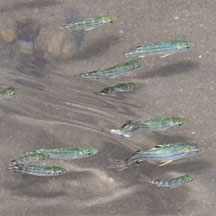
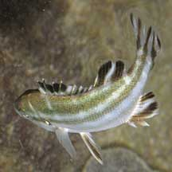
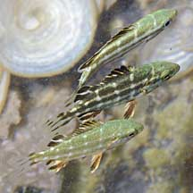
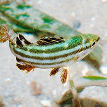
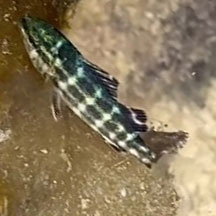

|
|
| fishes text index | photo index |
| Phylum Chordata > Subphylum Vertebrata > fishes > Family Terapontidae |
| Banded
perch Terapon theraps Family Terapontidae updated Oct 2016 Where seen? Small juveniles are often seen near reefs in schools. Features: Grows to 28cm, tiny ones 2-3cm long are sometimes seen in small groups near reefs. It has a tail fin striped black and white, a large prominent black blotch is on the dorsal fin, and about 4 broad blackish longitudinal stripes on sides that run through the eyes. Body colour dusky green above, white below. Juveniles dark brown or greenish with white-silvery spots or indistinct stripes. |
 Tanah Merah, Aug 11 |
|
 Tanah Merah, Aug 11. |
 Tanah Merah, Aug 09 |
 Tanah Merah, Oct 09 |
| Banded perch on Singapore shores |
On wildsingapore
flickr
|
 Cyrene Reef, Jul 14 Photo shared by Loh Kok Sheng on flickr. |
 Terumbu Hantu, Aug 23 Photo shared by Kelvin Yong on facebook. |
Links
|